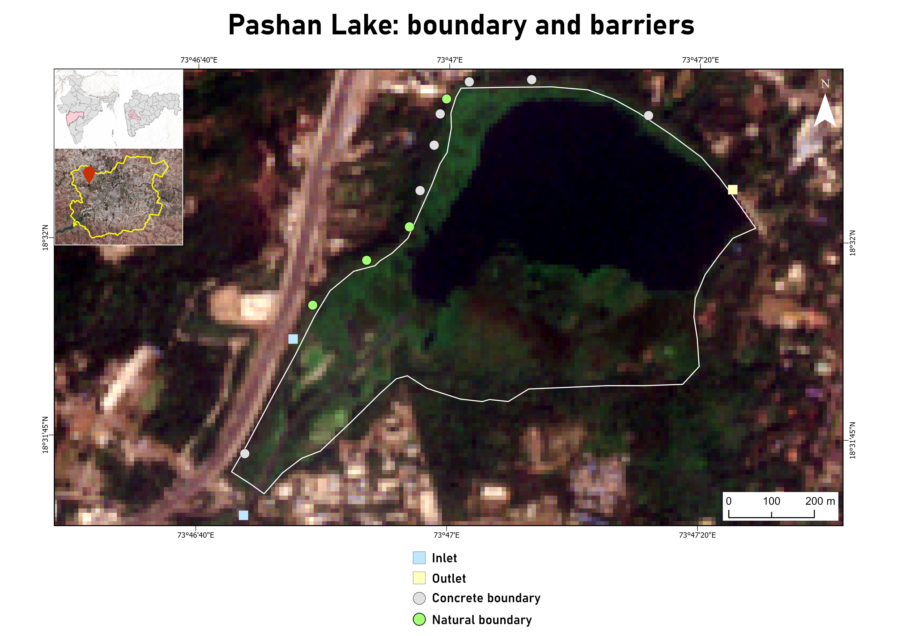

GIS & Cartography
Georeferencing, digitization, spatial data management, map design, spatial analysis.
QGIS ArcGIS Pro CartographyI am a geoinformatics student, with a geology background, exploring GIS, remote sensing and spatial analysis to understand environmental and Earth-system problems.
A little about my background, interests and the problems I am interested in solving with spatial data.
My interests lie at the intersection of geospatial technology, environmental science, and geology. I am particularly interested in how GIS and satellite remote sensing can be used to understand changes taking place across landscapes.
Through academic projects, fieldwork, and internships, I have worked with spatial data, satellite imagery, and digital elevation models.
I am continuing to develop my skills in QGIS, ArcGIS Pro, and Python while building a portfolio of practical geospatial projects.
My current technical skills include GIS, remote sensing, cartography, terrain analysis and beginner-level programming.
Georeferencing, digitization, spatial data management, map design, spatial analysis.
QGIS ArcGIS Pro CartographySatellite imagery interpretation, spectral indices, and image composites. Image interpretation Indices
Developing beginner-level programming skills for geospatial workflows.
Python ArcPyApplying geospatial techniques to vegetation, water bodies, and ecological issues.
EcologyVegetation sampling, geological outcrop sampling, lithosection construction, geological fieldwork
Sampling GeologyAbility to work in a team, communicate effectively, write scientific reports, and present findings
Teamwork Communication PresentationA selection of projects showing how I apply GIS, remote sensing and spatial analysis to real-world questions.

Analyzing decadal changes in LULC, surface water extent, and vegetation health, along with sources of pollution and extent of eutrophication to aid restoration efforts in Pashan Lake. ArcGIS Pro and Google Earth Engine are being used to process Sentinel-2, Landsat-8, and LISS-IV imagery to calculate spectral indices and perform temporal analysis. Field procedures include vegetatiion sampling through line and belt transects to assess ecological community metrics.

Analysed temporal changes in forest-fire affected areas in Gadchiroli, Maharashtra using spectral indices and satellite image composites from Sentinel-2 imagery. The project involved working with Normalized Burn Ratio-based fire mapping and calculation of burnt area.

Worked with digital elevation models (DEMs) to extract drainage networks and delineate watershed boundaries in QGIS. The length of the drainage network in each watershed was calculated to help make decisions on water conservation schemes & policies.
Prepared an elevation map of the Deccan Volcanic Province using a DEM. The extent of the DVP was extracted by georeferencing and digitizing a pre-existing map, and then used to clip the DEM tiles in Google Earth Engine. A hillshade raster was generated from the DEM and overlaid on it to better visualize the terrain.
A short timeline of my academic and professional development in geology and geospatial science.
Fergusson College, Pune • 2023-2026
Worked on a geospatial project involving temporal analysis of forest fires in Gadchiroli, Maharashtra. Developed experience with satellite imagery, spectral indices, image composites and QGIS workflows.
Worked with satellite imagery for digitization, drainage network extraction and watershed analysis.
Developing stronger skills in GIS, remote sensing, Python, R and geospatial analysis while building practical projects for future academic and professional opportunities.
NPTEL • 2025
View certificate →Goethe Institut • 2025
View certificate →